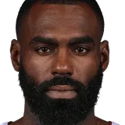

Carmelo Anthony
2003-04 to 2021-22 · Career Map
 Denver,
Denver,  New York,
New York,  Oklahoma City,
Oklahoma City,  Houston,
Houston,  Portland,
Portland,  LA Lakers
LA Lakers
His best final NBA finish was #4 of 30, with the 2008-09 Denver Nuggets. In his 1,260 games for 6 teams over 19 seasons they went 677–583 (53.7%), +94 games over .500, with an average final finish of 13.8. The biggest one-season rise in his career: the Denver Nuggets went from #12 in 2007-08 to #4 in 2008-09.
Jump to: Record by opponent · Season by season · Teammate help
Compare Carmelo Anthony with…
Suggested, same era and similar teammate help:


Final NBA finish, season by season
Title Finals Other playoffs Missed playoffs. #1 = champion; the dashed line is last place that season. Each point opens that season's final standings.
All 30 teams ranked in 2008-09, his best finish (#4)Teammate help
 Tyson Chandler8.02 seasons
Tyson Chandler8.02 seasons Damian Lillard8.02 seasons
Damian Lillard8.02 seasons Marcus Camby6.04 seasons
Marcus Camby6.04 seasons
Career
Career records (W–L, W − L, with and without) include 2026-27 games through Nov. 19, 2026; season counts and finishes are through 2025-26. Each card opens its board in the same scope. How we count.

Latest completed seasons
Season by season
Newest first; every header sorts. Final NBA finish is the team's rank among all teams that season (#1 = champion) and opens that season's standings. "Without him" uses the team-season window; the span line counts only the games between his first and last game for the team.
| 2021-22 | #23 of 30 | 33–49 40.2% | Missed playoffs | 69 of 82 | 27–42 39.1% | 6–7 46.2%span: 4–6, gap −0.9 | −7.0 | |
| 2020-21 | #9 of 30 | 42–30 58.3% | Lost 1st round 2–4 | 69 of 72 | 39–30 56.5% | 3–0 100.0%span: 3–0, gap −43.5 | −43.5 | |
| 2019-20 | #15 of 30 | 35–39 47.3% | Lost 1st round 1–4 | 58 of 74 | 28–30 48.3% | 7–9 43.8%span: 2–0, gap −51.7 | +4.5 | |
| 2018-19 | #6 of 30 | 53–29 64.6% | Lost conf semis 2–4 | 10 of 82 | 4–6 40.0% | 49–23 68.1%span: N/A, gap N/A | −28.1 | |
| 2017-18 | #10 of 30 | 48–34 58.5% | Lost 1st round 2–4 | 78 of 82 | 46–32 59.0% | 2–2 50.0%span: 2–2, gap +9.0 | +9.0 | |
| 2016-17 | #24 of 30 | 31–51 37.8% | Missed playoffs | 74 of 82 | 29–45 39.2% | 2–6 25.0%span: 2–6, gap +14.2 | +14.2 | |
| 2015-16 | #24 of 30 | 32–50 39.0% | Missed playoffs | 72 of 82 | 32–40 44.4% | 0–10 0.0%span: 0–9, gap +44.4 | +44.4 | |
| 2014-15 | #29 of 30 | 17–65 20.7% | Missed playoffs | 40 of 82 | 10–30 25.0% | 7–35 16.7%span: 0–12, gap +25.0 | +8.3 | |
| 2013-14 | #19 of 30 | 37–45 45.1% | Missed playoffs | 77 of 82 | 35–42 45.5% | 2–3 40.0%span: 0–3, gap +45.5 | +5.5 | |
| 2012-13 | #6 of 30 | 54–28 65.9% | Lost conf semis 2–4 | 67 of 82 | 47–20 70.1% | 7–8 46.7%span: 6–7, gap +24.0 | +23.5 | |
| 2011-12 | #14 of 30 | 36–30 54.5% | Lost 1st round 1–4 | 55 of 66 | 29–26 52.7% | 7–4 63.6%span: 6–4, gap −7.3 | −10.9 | |
| 2010-11 | #11 of 30 | 50–32 61.0% | Lost 1st round 1–4 | 50 of 82 | 29–21 58.0% | 4–4 50.0%span: 3–4, gap +15.1 | +8.0 | |
| 2010-11 | #14 of 30 | 42–40 51.2% | Lost 1st round 0–4 | 27 of 82 | 14–13 51.9% | 0–1 0.0%span: N/A, gap N/A | +51.9 | |
| 2009-10 | #10 of 30 | 53–29 64.6% | Lost 1st round 2–4 | 69 of 82 | 45–24 65.2% | 8–5 61.5%span: 8–5, gap +3.7 | +3.7 | |
| 2008-09 | #4 of 30 | 54–28 65.9% | Lost conf finals 2–4 | 66 of 82 | 45–21 68.2% | 9–7 56.2%span: 8–6, gap +11.0 | +11.9 | |
| 2007-08 | #12 of 30 | 50–32 61.0% | Lost 1st round 0–4 | 77 of 82 | 47–30 61.0% | 3–2 60.0%span: 3–2, gap +1.0 | +1.0 | |
| 2006-07 | #12 of 30 | 45–37 54.9% | Lost 1st round 1–4 | 65 of 82 | 37–28 56.9% | 8–9 47.1%span: 7–9, gap +13.2 | +9.9 | |
| 2005-06 | #11 of 30 | 44–38 53.7% | Lost 1st round 1–4 LAC | 80 of 82 | 44–36 55.0% | 0–2 0.0%span: 0–1, gap +55.0 | +55.0 | |
| 2004-05 | #11 of 30 | 49–33 59.8% | Lost 1st round 1–4 | 75 of 82 | 47–28 62.7% | 2–5 28.6%span: 2–5, gap +34.1 | +34.1 | |
| 2003-04 | #12 of 29 | 43–39 52.4% | Lost 1st round 1–4 | 82 of 82 | 43–39 52.4% | N/A | N/A |
On/off, starts and close games
From the lineup data, 1996-97 on. On/off is net points per 100 possessions with him on the floor minus off, a different unit from the win-rate gaps. Started and off the bench are team records in those games; close games are those within 5 points in the last 5 minutes with him on the floor.
| 2021-22 | +0.1 | 1–2 33.3% | 26–40 39.4% | 13–20 39.4% | |
| 2020-21 | −4.6 | 1–2 33.3% | 38–28 57.6% | 17–11 60.7% | |
| 2019-20 | +4.5 | 28–30 48.3% | N/A | 15–8 65.2% | |
| 2018-19 | −11.6 | 0–2 0.0% | 4–4 50.0% | 4–1 80.0% | |
| 2017-18 | +4.1 | 46–32 59.0% | N/A | 25–20 55.6% | |
| 2016-17 | −5.9 | 29–45 39.2% | N/A | 17–21 44.7% | |
| 2015-16 | +4.0 | 32–40 44.4% | N/A | 13–18 41.9% | |
| 2014-15 | +6.2 | 10–30 25.0% | N/A | 7–15 31.8% | |
| 2013-14 | +8.3 | 35–42 45.5% | N/A | 14–22 38.9% | |
| 2012-13 | +3.1 | 47–20 70.1% | N/A | 18–12 60.0% | |
| 2011-12 | −3.1 | 29–26 52.7% | N/A | 10–14 41.7% | |
| 2010-11 | +4.7 | 29–21 58.0% | N/A | 15–13 53.6% | |
| 2010-11 | −1.6 | 14–13 51.9% | N/A | 7–10 41.2% | |
| 2009-10 | +2.8 | 45–24 65.2% | N/A | 17–15 53.1% | |
| 2008-09 | +10.6 | 45–21 68.2% | N/A | 19–10 65.5% | |
| 2007-08 | −5.0 | 47–30 61.0% | N/A | 18–15 54.5% | |
| 2006-07 | −0.0 | 37–28 56.9% | N/A | 22–16 57.9% | |
| 2005-06 | −0.9 | 44–36 55.0% | N/A | 22–15 59.5% | |
| 2004-05 | +0.6 | 47–28 62.7% | N/A | 20–13 60.6% | |
| 2003-04 | −1.2 | 43–39 52.4% | N/A | 18–20 47.4% |
Teammate help by season
Two separate numbers per season, each with every teammate that adds to it. Help this season = Teammates Score points for honors won that season by teammates who shared a game with him. Help coming in = the same teammates' honors from the season before. How help works.
- 2021-22
 LA Lakers
LA Lakers
 LeBron James All-NBA 3rdAll-Star346 g
LeBron James All-NBA 3rdAll-Star346 g
Help this season: 3 = 3 LeBron James
More: help coming in and other teammates
Help coming in (teammates' honors the season before): 5 = 4 LeBron James + 1 Anthony Davis
Other teammates (no honors that season): Russell Westbrook 69 g, Malik Monk 63 g, Avery Bradley 53 g, Dwight Howard 52 g, Austin Reaves 49 g, Talen Horton-Tucker 49 g, Kent Bazemore 36 g, Wayne Ellington 36 g, Stanley Johnson 35 g, Anthony Davis 34 g, DeAndre Jordan 30 g, Rajon Rondo 18 g, Trevor Ariza 16 g, DJ Augustin 16 g and 8 more
- 2020-21
 Portland
Damian Lillard All-NBA 2ndAll-Star464 g
Portland
Damian Lillard All-NBA 2ndAll-Star464 g
Help this season: 4 = 4 Damian Lillard
More: help coming in and other teammates
Help coming in (teammates' honors the season before): 4 = 4 Damian Lillard
Other teammates (no honors that season): Enes Kanter 69 g, Robert Covington 67 g, Anfernee Simons 61 g, Derrick Jones 56 g, Nassir Little 46 g, CJ McCollum 44 g, Gary Trent Jr 40 g, Rodney Hood 37 g, Harry Giles 36 g, Jusuf Nurkic 34 g, CJ Elleby 28 g, Norman Powell 25 g, Keljin Blevins 15 g, Rondae Hollis-Jefferson 10 g and 1 more
- 2019-20Portland
Damian Lillard All-NBA 2ndAll-Star450 g
Help this season: 4 = 4 Damian Lillard
More: help coming in and other teammates
Help coming in (teammates' honors the season before): 4 = 4 Damian Lillard
Other teammates (no honors that season): CJ McCollum 54 g, Anfernee Simons 54 g, Hassan Whiteside 52 g, Gary Trent Jr 51 g, Nassir Little 39 g, Mario Hezonja 38 g, Kent Bazemore 28 g, Trevor Ariza 20 g, Anthony Tolliver 20 g, Caleb Swanigan 19 g, Wenyen Gabriel 18 g, Skal Labissiere 18 g, Jaylen Hoard 12 g, Rodney Hood 9 g and 3 more
- 2018-19
 Houston
Houston
 James Harden All-NBA 1stAll-Star57 g
James Harden All-NBA 1stAll-Star57 g
Help this season: 5 = 5 James Harden
More: help coming in and other teammates
Help coming in (teammates' honors the season before): 11 = 11 James Harden
Other teammates (no honors that season): Clint Capela 10 g, PJ Tucker 10 g, Gerald Green 10 g, Gary Clark 9 g, Isaiah Hartenstein 9 g, Chris Paul 8 g, James Ennis 7 g, Michael Carter-Williams 7 g, Eric Gordon 7 g, Marquese Chriss 3 g, Zhou Qi 1 g
- 2017-18
 Oklahoma City
Oklahoma City
 Russell Westbrook All-NBA 2ndAll-Star478 g
Russell Westbrook All-NBA 2ndAll-Star478 g Paul George All-NBA 3rdAll-Star375 g
Paul George All-NBA 3rdAll-Star375 g
Help this season: 7 = 4 Russell Westbrook + 3 Paul George
More: help coming in and other teammates
Help coming in (teammates' honors the season before): 12.5 = 11 Russell Westbrook + 1 Paul George + 0.5 Andre Roberson
Other teammates (no honors that season): Patrick Patterson 78 g, Raymond Felton 78 g, Jerami Grant 77 g, Steven Adams 73 g, Alex Abrines 71 g, Josh Huestis 65 g, Terrance Ferguson 58 g, Andre Roberson 38 g, Dakari Johnson 28 g, Corey Brewer 17 g, Nick Collison 14 g, Kyle Singler 9 g, Daniel Hamilton 4 g
- 2016-17
 New York
New York
 Willy Hernangomez All-Rookie 1st0.2564 g
Willy Hernangomez All-Rookie 1st0.2564 g
Help this season: 0.25 = 0.25 Willy Hernangomez
More: help coming in and other teammates
Help coming in (teammates' honors the season before): 0.25 = 0.25 Kristaps Porzingis
Other teammates (no honors that season): Justin Holiday 74 g, Kyle O'Quinn 71 g, Courtney Lee 69 g, Derrick Rose 62 g, Mindaugas Kuzminskas 61 g, Kristaps Porzingis 60 g, Brandon Jennings 57 g, Joakim Noah 45 g, Lance Thomas 44 g, Ron Baker 44 g, Sasha Vujacic 36 g, Maurice Ndour 26 g, Marshall Plumlee 15 g, Chasson Randle 11 g
- 2015-16New York
 Kristaps Porzingis All-Rookie 1st0.2565 g
Kristaps Porzingis All-Rookie 1st0.2565 g
Help this season: 0.25 = 0.25 Kristaps Porzingis
More: help coming in and other teammates
Help coming in (teammates' honors the season before): 0.125 = 0.125 Langston Galloway
Other teammates (no honors that season): Langston Galloway 72 g, Robin Lopez 72 g, Derrick Williams 70 g, Jerian Grant 66 g, Jose Calderon 65 g, Arron Afflalo 61 g, Kyle O'Quinn 57 g, Sasha Vujacic 53 g, Lance Thomas 53 g, Kevin Seraphin 40 g, Louis Amundson 24 g, Cleanthony Early 12 g, Thanasis Antetokounmpo 2 g, Jimmer Fredette 2 g
- 2014-15New York
 Langston Galloway All-Rookie 2nd0.12510 g
Langston Galloway All-Rookie 2nd0.12510 g
Help this season: 0.125 = 0.125 Langston Galloway
More: help coming in and other teammates
Help coming in (teammates' honors the season before): 0.25 = 0.25 Tim Hardaway Jr
Other teammates (no honors that season): Tim Hardaway Jr 40 g, Jason Smith 40 g, Shane Larkin 37 g, Quincy Acy 33 g, Pablo Prigioni 31 g, Amare Stoudemire 29 g, Samuel Dalembert 28 g, Jose Calderon 27 g, Travis Wear 26 g, Cole Aldrich 23 g, Iman Shumpert 21 g, JR Smith 20 g, Cleanthony Early 10 g, Lance Thomas 10 g and 2 more
- 2013-14New York

Tim Hardaway Jr All-Rookie 1st0.2576 gHelp this season: 0.25 = 0.25 Tim Hardaway Jr
More: help coming in and other teammates
Help coming in (teammates' honors the season before): 2.5 = 2 Tyson Chandler + 0.5 JR Smith
Other teammates (no honors that season): JR Smith 69 g, Iman Shumpert 69 g, Pablo Prigioni 64 g, Raymond Felton 64 g, Amare Stoudemire 60 g, Tyson Chandler 51 g, Toure Murry 46 g, Cole Aldrich 42 g, Jeremy Tyler 39 g, Andrea Bargnani 39 g, Kenyon Martin 29 g, Beno Udrih 28 g, Metta World Peace 28 g, Shannon Brown 17 g and 1 more
- 2012-13New York
Tyson Chandler All-StarAll-Def 1st256 g
 JR Smith Sixth Man0.567 g
JR Smith Sixth Man0.567 g
Help this season: 2.5 = 2 Tyson Chandler + 0.5 JR Smith
More: help coming in and other teammates
Help coming in (teammates' honors the season before): 6.25 = 6 Tyson Chandler + 0.25 Iman Shumpert
Other teammates (no honors that season): Steve Novak 66 g, Pablo Prigioni 64 g, Jason Kidd 62 g, Raymond Felton 58 g, James White 47 g, Chris Copeland 44 g, Ronnie Brewer 39 g, Iman Shumpert 37 g, Kurt Thomas 26 g, Amare Stoudemire 26 g, Rasheed Wallace 18 g, Marcus Camby 16 g, Kenyon Martin 13 g, Solomon Jones 2 g
- 2011-12New York
Tyson Chandler DPOYAll-NBA 3rdAll-Def 2nd652 g
 Iman Shumpert All-Rookie 1st0.2548 g
Iman Shumpert All-Rookie 1st0.2548 g
Help this season: 6.25 = 6 Tyson Chandler + 0.25 Iman Shumpert
More: help coming in and other teammates
Help coming in (teammates' honors the season before): 4.75 = 4 Amare Stoudemire + 0.5 Tyson Chandler + 0.25 Landry Fields
Other teammates (no honors that season): Landry Fields 55 g, Steve Novak 43 g, Amare Stoudemire 39 g, Josh Harrellson 35 g, Toney Douglas 34 g, JR Smith 33 g, Mike Bibby 30 g, Jared Jeffries 29 g, Baron Davis 29 g, Jeremy Lin 26 g, Henry Walker 23 g, Jerome Jordan 16 g, Renaldo Balkman 11 g, Dan Gadzuric 1 g
- 2010-11
 DenverHelp this season: 0, no honored teammate
DenverHelp this season: 0, no honored teammateMore: help coming in
Help coming in (teammates' honors the season before): 1 = 1 Chauncey Billups
- 2010-11New York
 Amare Stoudemire All-NBA 2ndAll-Star424 gLandry Fields All-Rookie 1st0.2527 g
Amare Stoudemire All-NBA 2ndAll-Star424 gLandry Fields All-Rookie 1st0.2527 g
Help this season: 4.25 = 4 Amare Stoudemire + 0.25 Landry Fields
More: help coming in and other teammates
Help coming in (teammates' honors the season before): 5 = 4 Amare Stoudemire + 1 Chauncey Billups
Other teammates (no honors that season): Toney Douglas 27 g, Shawne Williams 27 g, Jared Jeffries 23 g, Chauncey Billups 21 g, Ronny Turiaf 20 g, Henry Walker 18 g, Anthony Carter 18 g, Shelden Williams 16 g, Roger Mason 15 g, Derrick Brown 7 g, Renaldo Balkman 3 g, Andy Rautins 1 g
- 2009-10Denver
 Chauncey Billups All-Star164 g
Chauncey Billups All-Star164 g
Help this season: 1 = 1 Chauncey Billups
More: help coming in and other teammates
Help coming in (teammates' honors the season before): 3 = 3 Chauncey Billups
Other teammates (no honors that season): Nenê 69 g, Arron Afflalo 69 g, Chris Andersen 64 g, JR Smith 62 g, Ty Lawson 54 g, Joey Graham 49 g, Malik Allen 46 g, Anthony Carter 46 g, Kenyon Martin 45 g, Johan Petro 32 g, Renaldo Balkman 13 g
- 2008-09Denver
Chauncey Billups All-NBA 3rdAll-Star363 g
 Allen Iverson All-Star11 g
Allen Iverson All-Star11 g
Help this season: 4 = 3 Chauncey Billups + 1 Allen Iverson
More: help coming in and other teammates
Help coming in (teammates' honors the season before): 2 = 1 Chauncey Billups + 1 Allen Iverson
Other teammates (no honors that season): Linas Kleiza 66 g, JR Smith 65 g, Dahntay Jones 64 g, Anthony Carter 62 g, Nenê 61 g, Chris Andersen 55 g, Kenyon Martin 50 g, Renaldo Balkman 46 g, Johan Petro 22 g, Jason Hart 11 g, Chucky Atkins 11 g, Sonny Weems 8 g, Cheikh Samb 6 g, Juwan Howard 1 g
- 2007-08Denver
Allen Iverson All-Star177 gMarcus Camby All-Def 1st174 g
Help this season: 2 = 1 Allen Iverson + 1 Marcus Camby
More: help coming in and other teammates
Help coming in (teammates' honors the season before): 5 = 4 Marcus Camby + 1 Allen Iverson
Other teammates (no honors that season): Linas Kleiza 74 g, Eduardo Najera 73 g, JR Smith 69 g, Kenyon Martin 66 g, Anthony Carter 65 g, Yakhouba Diawara 49 g, Bobby Jones 24 g, Chucky Atkins 24 g, Von Wafer 19 g, Steven Hunter 18 g, Nenê 16 g, Taurean Green 9 g, Mike Wilks 8 g, Jelani McCoy 6 g
- 2006-07Denver
Marcus Camby DPOYAll-Def 1st459 gAllen Iverson All-Star135 g
Help this season: 5 = 4 Marcus Camby + 1 Allen Iverson
More: help coming in and other teammates
Help coming in (teammates' honors the season before): 3.5 = 3 Allen Iverson + 0.5 Marcus Camby
Other teammates (no honors that season): Linas Kleiza 62 g, Eduardo Najera 58 g, JR Smith 57 g, Nenê 53 g, Reggie Evans 49 g, Yakhouba Diawara 47 g, Steve Blake 43 g, DerMarr Johnson 29 g, Andre Miller 22 g, Earl Boykins 20 g, Jamal Sampson 15 g, Joe Smith 10 g, Kenyon Martin 2 g, Anthony Carter 1 g
- 2005-06Denver
Marcus Camby All-Def 2nd0.555 g
Help this season: 0.5 = 0.5 Marcus Camby
More: help coming in and other teammates
Help coming in (teammates' honors the season before): 0.5 = 0.5 Marcus Camby
Other teammates (no honors that season): Andre Miller 80 g, Greg Buckner 73 g, Francisco Elson 70 g, Eduardo Najera 62 g, Earl Boykins 59 g, Linas Kleiza 59 g, DerMarr Johnson 56 g, Kenyon Martin 55 g, Earl Watson 45 g, Reggie Evans 25 g, Ruben Patterson 25 g, Howard Eisley 18 g, Julius Hodge 14 g, Voshon Lenard 11 g and 3 more
- 2004-05Denver
Marcus Camby All-Def 2nd0.560 g
Help this season: 0.5 = 0.5 Marcus Camby
More: help coming in and other teammates
Help coming in (teammates' honors the season before): 1 = 1 Kenyon Martin
Other teammates (no honors that season): Andre Miller 75 g, Earl Boykins 75 g, DerMarr Johnson 65 g, Kenyon Martin 64 g, Bryon Russell 63 g, Greg Buckner 63 g, Francisco Elson 60 g, Nenê 49 g, Rodney White 36 g, Eduardo Najera 26 g, Wesley Person 25 g, Nikoloz Tskitishvili 19 g, Mark Pope 9 g, Voshon Lenard 3 g and 1 more
- 2003-04DenverHelp this season: 0, no honored teammate
More: help coming in
Help coming in (teammates' honors the season before): 0.25 = 0.25 Nenê
Record against each opponent
- Best regular-season record against one franchise: 30–11 (73.2%) against the Philadelphia 76ers in 41 games.
- Toughest regular-season record against one franchise: 6–15 (28.6%) against the Denver Nuggets in 21 games.
- Most playoff series against one franchise: 3 against the Los Angeles Lakers, 0–3 in series and 3–12 in games.
Regular season, through 2025-26 (2026-27 games not included): 1,260 games, 677–583, against 30 franchises.
Grouped by franchise (named as today); game lists keep each team's name that season. Filters and the tab are kept in the URL, so a filtered view can be shared.
| Games list | |||||||
|---|---|---|---|---|---|---|---|
| 51 | 32–19 | 62.7% | +13 | 0–1 (1–3 in games) | 2003-04 to 2021-22 | ||
| 50 | 21–29 | 42.0% | −8 | 0–1 (1–4 in games) | 2003-04 to 2021-22 | ||
| 49 | 19–30 | 38.8% | −11 | N/A | 2003-04 to 2021-22 | ||
| 47 | 21–26 | 44.7% | −5 | 1–0 (4–1 in games) | 2003-04 to 2021-22 | ||
| 46 | 22–24 | 47.8% | −2 | 0–2 (4–8 in games) | 2003-04 to 2021-22 | ||
| 45 | 24–21 | 53.3% | +3 | N/A | 2003-04 to 2021-22 | ||
| 45 | 25–20 | 55.6% | +5 | N/A | 2003-04 to 2021-22 | ||
| 45 | 28–17 | 62.2% | +11 | N/A | 2003-04 to 2021-22 | ||
| 45 | 23–22 | 51.1% | +1 | N/A | 2003-04 to 2021-22 | ||
| 45 | 24–21 | 53.3% | +3 | 1–0 (4–1 in games) | 2003-04 to 2021-22 | ||
| 44 | 28–16 | 63.6% | +12 | N/A | 2003-04 to 2021-22 | ||
| 44 | 21–23 | 47.7% | −2 | N/A | 2003-04 to 2021-22 | ||
| 44 | 21–23 | 47.7% | −2 | 0–3 (3–12 in games) | 2003-04 to 2020-21 | ||
| 44 | 20–24 | 45.5% | −4 | 0–2 (2–8 in games) | 2003-04 to 2021-22 | ||
| 43 | 18–25 | 41.9% | −7 | 1–1 (4–6 in games) | 2003-04 to 2021-22 | ||
| 43 | 23–20 | 53.5% | +3 | N/A | 2003-04 to 2021-22 | ||
| 43 | 26–17 | 60.5% | +9 | 0–1 (2–4 in games) | 2003-04 to 2021-22 | ||
| 43 | 25–18 | 58.1% | +7 | N/A | 2003-04 to 2021-22 | ||
| 43 | 25–18 | 58.1% | +7 | N/A | 2003-04 to 2021-22 | ||
| 42 | 28–14 | 66.7% | +14 | N/A | 2003-04 to 2021-22 | ||
| 41 | 26–15 | 63.4% | +11 | N/A | 2003-04 to 2021-22 | ||
| 41 | 30–11 | 73.2% | +19 | N/A | 2003-04 to 2021-22 | ||
| 40 | 20–20 | 50.0% | 0 | N/A | 2003-04 to 2021-22 | ||
| 40 | 22–18 | 55.0% | +4 | 0–1 (1–4 in games) | 2003-04 to 2021-22 | ||
| 40 | 22–18 | 55.0% | +4 | N/A | 2003-04 to 2021-22 | ||
| 38 | 21–17 | 55.3% | +4 | N/A | 2004-05 to 2021-22 | ||
| 38 | 21–17 | 55.3% | +4 | N/A | 2003-04 to 2021-22 | ||
| 37 | 22–15 | 59.5% | +7 | N/A | 2003-04 to 2021-22 | ||
| 23 | 13–10 | 56.5% | +3 | N/A | 2003-04 to 2021-22 | ||
| 21 | 6–15 | 28.6% | −9 | 0–1 (2–4 in games) | 2011-12 to 2021-22 |
Rows add up to his career record in his games. A playoff series counts when he played in it; early round-robin games show as games only. How we count.
Playoffs, with and without him
| 2020-21 | Lost in the first round 2–4 to | #9 of 30 | 6 of 6 | 2–4 33.3% | N/A | N/A | |
| 2019-20 | Lost in the first round 1–4 to | #15 of 30 | 5 of 5 | 1–4 20.0% | N/A | N/A | |
| 2017-18 | Lost in the first round 2–4 to | #10 of 30 | 6 of 6 | 2–4 33.3% | N/A | N/A | |
| 2012-13 | Lost in the conference semifinals 2–4 to | #6 of 30 | 12 of 12 | 6–6 50.0% | N/A | N/A | |
| 2011-12 | Lost in the first round 1–4 to | #14 of 30 | 5 of 5 | 1–4 20.0% | N/A | N/A | |
| 2010-11 | Lost in the first round 0–4 to | #14 of 30 | 4 of 4 | 0–4 0.0% | N/A | N/A | |
| 2009-10 | Lost in the first round 2–4 to | #10 of 30 | 6 of 6 | 2–4 33.3% | N/A | N/A | |
| 2008-09 | Lost in the conference finals 2–4 to | #4 of 30 | 16 of 16 | 10–6 62.5% | N/A | N/A | |
| 2007-08 | Lost in the first round 0–4 to | #12 of 30 | 4 of 4 | 0–4 0.0% | N/A | N/A | |
| 2006-07 | Lost in the first round 1–4 to | #12 of 30 | 5 of 5 | 1–4 20.0% | N/A | N/A | |
| 2005-06 | Lost in the first round 1–4 to LA Clippers | #11 of 30 | 5 of 5 | 1–4 20.0% | N/A | N/A | |
| 2004-05 | Lost in the first round 1–4 to | #11 of 30 | 5 of 5 | 1–4 20.0% | N/A | N/A | |
| 2003-04 | Lost in the first round 1–4 to | #12 of 29 | 4 of 5 | 1–3 25.0% | 0–1 0.0% | +25.0 |
Arrival and departure
Team wins per 82 games the season before he arrived vs his first season there, and his last season vs the season after he left. He leaves a team only when his next season with games is for another team (or he never plays again); whole seasons he missed and came back from are one "Missed" row with the team's record without him. Per 82 so short seasons compare fairly. These are team records, not a measure of what he did.
| Left | after 2021-22 | 2021-22: 33–49 33.0 per 82 | 2022-23: 43–39 43.0 per 82 without him | +10.0 wins | |
| Arrived | 2021-22 | 2020-21: 42–30 47.8 per 82 | 2021-22: 33–49 33.0 per 82 | −14.8 wins | |
| Left | after 2020-21 | 2020-21: 42–30 47.8 per 82 | 2021-22: 27–55 27.0 per 82 without him | −20.8 wins | |
| Arrived | 2019-20 | 2018-19: 53–29 53.0 per 82 | 2019-20: 35–39 38.8 per 82 | −14.2 wins | |
| Left | after 2018-19 | 2018-19: 53–29 53.0 per 82 | 2019-20: 44–28 50.1 per 82 without him | −2.9 wins | |
| Arrived | 2018-19 | 2017-18: 65–17 65.0 per 82 | 2018-19: 53–29 53.0 per 82 | −12.0 wins | |
| Left | after 2017-18 | 2017-18: 48–34 48.0 per 82 | 2018-19: 49–33 49.0 per 82 without him | +1.0 wins | |
| Arrived | 2017-18 | 2016-17: 47–35 47.0 per 82 | 2017-18: 48–34 48.0 per 82 | +1.0 wins | |
| Left | after 2016-17 | 2016-17: 31–51 31.0 per 82 | 2017-18: 29–53 29.0 per 82 without him | −2.0 wins | |
| Left | after 2010-11 | 2010-11: 50–32 50.0 per 82 | 2011-12: 38–28 47.2 per 82 without him | −2.8 wins | |
| Arrived | 2010-11 | 2009-10: 29–53 29.0 per 82 | 2010-11: 42–40 42.0 per 82 | +13.0 wins | |
| Debut | 2003-04 | 2002-03: 17–65 17.0 per 82 | 2003-04: 43–39 43.0 per 82 | +26.0 wins |
Seasons split between teams
Each team's record before his first game for it, inside his window (games with and without him) and after his last game, in the seasons he played for two or more teams.
Best duos
Team record in regular-season games both played, top 10 by win %, at least 50 games together.
- Johan Petro 38–16 70.4%
 Jason Kidd
43–19 69.4%
Jason Kidd
43–19 69.4% Dahntay Jones
44–20 68.8%
Dahntay Jones
44–20 68.8%- Renaldo Balkman 52–24 68.4%
- Shelden Williams 35–18 66.0%
 Steve Novak
70–39 64.2%
Steve Novak
70–39 64.2%- Anthony Carter 132–74 64.1%
- Chauncey Billups
123–69 64.1%
 Josh Huestis
41–24 63.1%
Josh Huestis
41–24 63.1% Ty Lawson
63–39 61.8%
Ty Lawson
63–39 61.8%